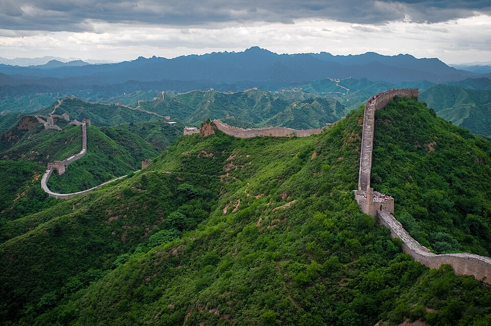

Eiffel Tower

The iconic symbol of Paris, offering panoramic city views.
Great Wall
An ancient series of walls and fortifications spanning across China.
Machu Picchu
The 15th-century Inca citadel set high in the Andes Mountains.
The iconic symbol of Paris, offering panoramic city views.
An ancient series of walls and fortifications spanning across China.
The 15th-century Inca citadel set high in the Andes Mountains.